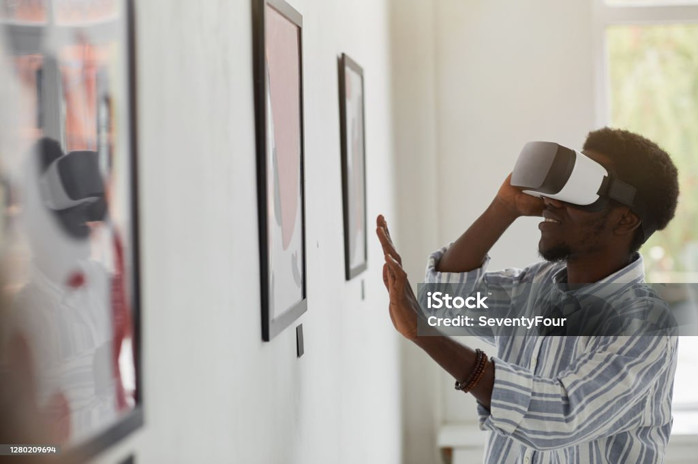
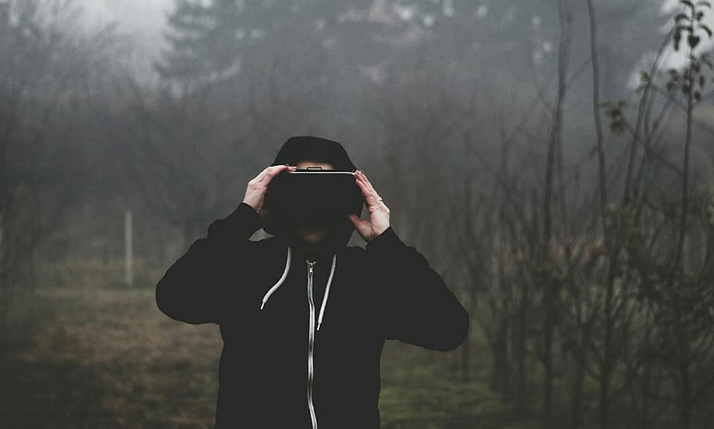
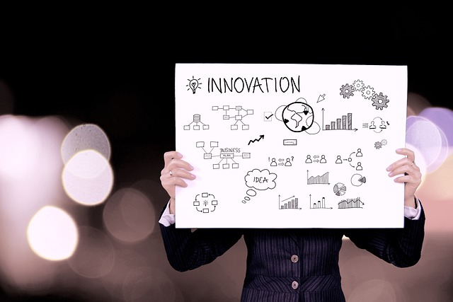

¡Bienvenidos! al primer Museo Virtual de El Salvador y la región. Te invitamos a que conozcas quienes somos y a qué estamos comprometidos para hacer de tu visita una experiencia inigualable y única.
Misión |
Visión |
Valores |
|---|---|---|
 |
 |
 |
Crear un espacio cultural, ambientado con tecnología en el que los visitantes puedan informarse sobre hechos históricos y culturales, característicos de El Salvador, impulsando el enfoque tecnológico en el futuro del turismo salvadoreño. |
Diseñar recreaciones culturales e históricas, divertidas y educativas de la mejor calidad, a nivel nacional a través de la implementación de la tecnología. |
|